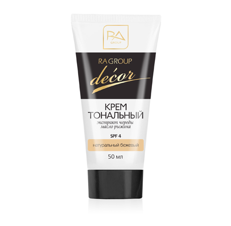

Элитная коллекция духов VP
Ароматы для женщин
Ароматы для мужчин
Ароматы с феромонами
Элитная коллекция VEDO
Декоративная косметика
|
|

|
50 ml
БЕЗУПРЕЧНЫЙ ЦВЕТ ЛИЦА НА ЦЕЛЫЙ ДЕНЬ!
С лечебным действием!
Цвет - естественный бежевый
Для кожи любого типа, в том числе чувствительной.
Придает коже ровный и естественный матовый оттенок, скрывает дефекты кожи.
Содержит активные компоненты, которые оберегают кожу от
воспаления и аллергических реакций,
обладают антивозрастным и легким солнцезащитным действием.
Крем легко и равномерно распределяется по коже; устойчив к дождю и снегу.
КОМПОНЕНТЫ:
Экстракт череды успокаивает раздражения,
улучшает состояние кожи при аллергии, угрях и прыщах,
способствует заживлению царапин и ранок.
Масло рыжика активно питает кожу, препятствует
появлению морщин и пигментных пятен,
защищает кожу от воспаления и избытка ультрафиолета.
Экстракт чистотела смягчает кожу, устраняет шелушение.
Диоксид титана обладает солнцезащитными свойствами.
Оттеночные пигменты - высокоочищенные стойкие
минеральные красители французского производства.
|